Twenty-five years of founding, leading and making creative work across brand, digital, product and live experience, from a tank hung with 150 ringing phones to a debit card that miaows. These are the pieces most relevant to bringing a brand onto a stage.
Selected work
1996 to 2010
D&AD Black Pencil2 BAFTAsCliosCyber Lion
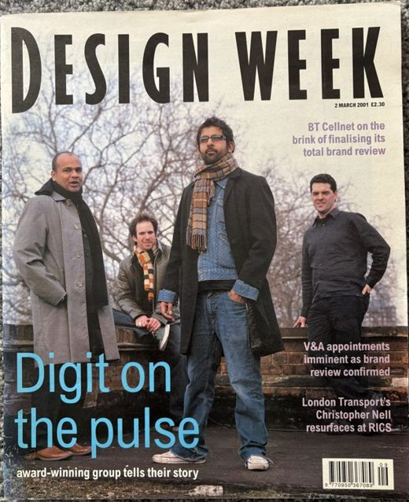
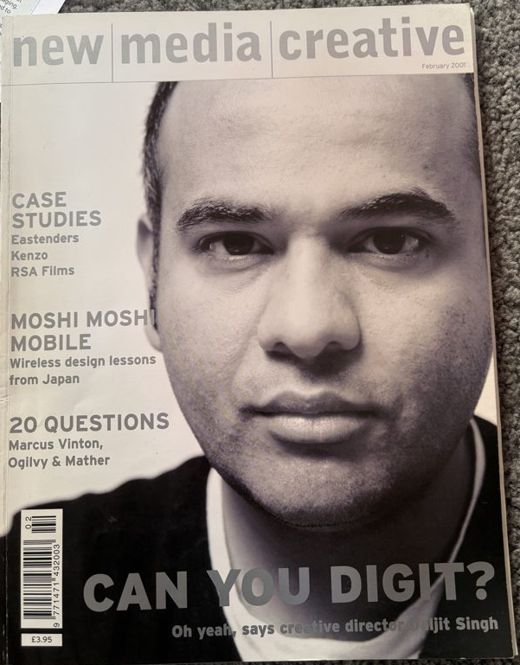
Agency · Founder
Digit
Founded the agency, grew it past 100 people and sold it to WPP in 2005. A design-led R&D programme fed the work, from the first 3D website for MTV2 to campaigns for Coca-Cola, Nokia, the BBC and the National Gallery. I hired as readily from theatre, print and film as from digital, and asked only that everyone could draw, because an idea you cannot sketch is very hard to share with a team.
The work reached the covers of Design Week and New Media Creative and a Creative Review feature, and MTV2 won Best of Show at the Design Week Awards.
5 studios.
LondonBerlinIstanbulMadridDubai
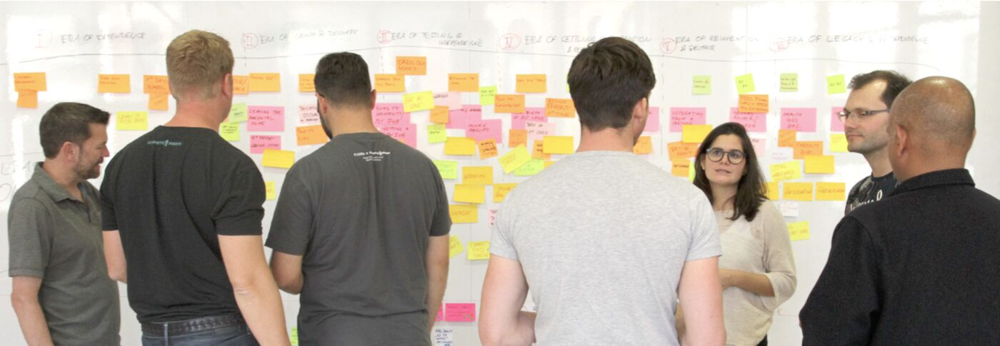
Strategy · Fjord, Accenture · 2015 to 2017
One region, one strategy
Led design strategy across Fjord's EMEA studios for Audi, HSBC, Microsoft and Etisalat, and led new business pitches by assembling teams from different studios and markets.
Michael WolffNB StudioustwoFjord
Partners · Choosing and directing
Working with outside talent
Directed ANNA's identity with Michael Wolff and NB Studio, and at Tochka wrote the briefs and ran the pitch that brought in ustwo, Fjord and independent designers. I have been the agency and the client, so I know good direction from both sides.
An AI tool that scores customer communications against our Seven Trust Signals, quotes the evidence and rewrites the most damaging sentence. We use it live in client pitches.
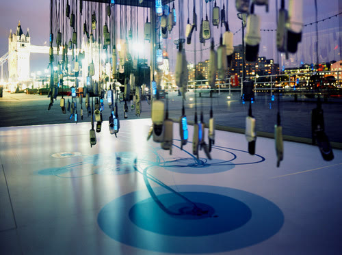
Installation · Design Museum · c. 2004
The Digital Aquarium
I borrowed 150 phones from Motorola and hung them in a tank. Visitors called a number on the outside and the phones rang and lit up in staggered order, so the calls swam across the tank like a school of fish. It stood outside the Design Museum in London and was the first installation of its kind.
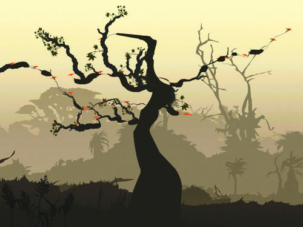
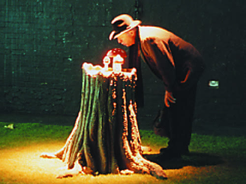
Installation · ICA, London · c. 2003
The Typographic Tree
Visitors spoke into a microphone in the trunk of a life-size projected tree and their voices made it grow, twist and contort. Louder, sharper sounds made flowers bloom or startled creatures in the distance. It was shown at the ICA in London, part of Digit's own R&D.
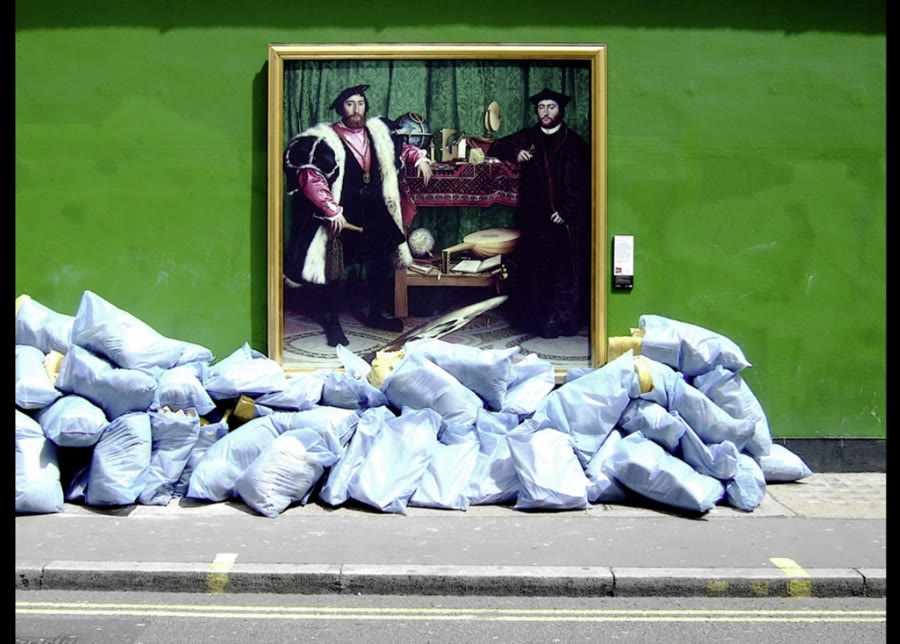
Public exhibition · National Gallery · 2007
The Grand Tour
An outdoor exhibition of the gallery's Old Master paintings across Central London, built to bring more people through its doors. The design consultancy The Partners devised it with HP, and Digit produced the digital layer. This was before the mobile internet, so you dialled the number under each painting to hear a curator talk about it, and we made the maps and tours people followed from one painting to the next.
500,000
Ringtones sprayed on glass
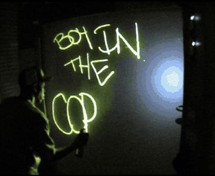
Interactive · Motorola · 2008
Motoglyph
More than 500,000 people made their own ringtones by digitally spraying on glass, among them Dizzee Rascal, seen here at the Miami Music Conference. It was the first of its kind, made for Motorola, and we then licensed it to Motorola, who used it around the world.
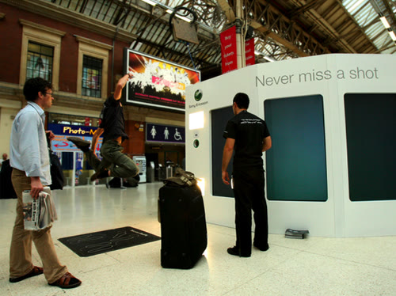
Interactive booth · Sony Ericsson · Train stations
K800i Cyber-shot
The phone took nine photos in rapid succession and needed a simple, memorable way to show why that mattered. Years of R&D meant we could design, program and build the whole interactive experience from the ground up. We made it with MediaEdge:CIA, part of WPP, and it appeared in main train stations across Europe, including London Victoria.
20,000 children, one image
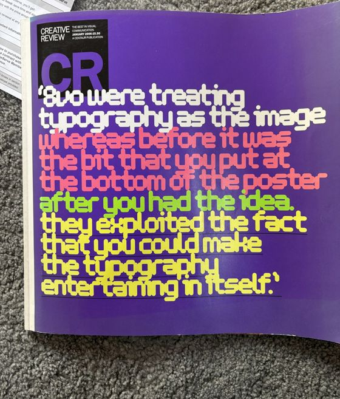
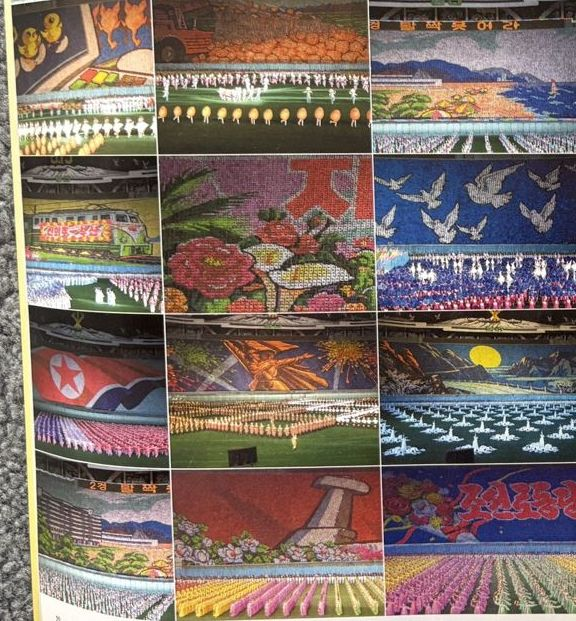
Spectacle · Creative Review, January 2006
Night of the Human Pixels
Tess O'Leary and I travelled to Pyongyang to see the Arirang Mass Games, where 20,000 schoolchildren turn the pages of coloured books on cue to make a mosaic across one side of the stadium, with 200,000 performers in all. Creative Review ran our photographs, a lesson in staging at a scale few brands will ever attempt.
•••• 0001ANNAMiaow!
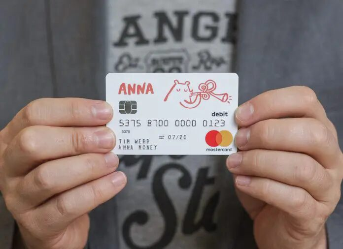
Physical product · ANNA Money
The miaowing debit card
The world's first debit card that miaows when you pay, and later an app that woofs when you get paid. A small joke built on a product truth, that running your own business should be fun. It earned coverage in The Times and WIRED and around 3m video views.
An evening for people working at the sharp edge of trust, from finance, design, risk and behaviour, with voices from well outside the usual frame. Around thirty came to the first at Diespeker Wharf, where Nicolas Roope argued that integrity is coherence across a whole system and art provenance expert Angelina Giovani-Agha showed what trust is worth when it is the entire value. Co-hosted with Hem Patel of Parallel, in a room from Tim Malbon of Made by Many.
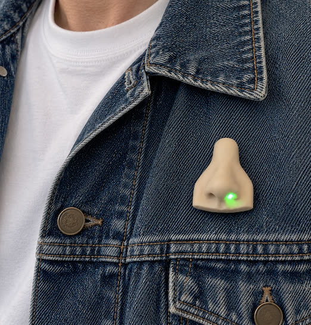
Provoke · Prototype
The Trust Nose
A wearable nose with one nostril that glows green and one that glows red, made to turn the idea of trust into something you can wear and talk about. It began when my daughter asked why restaurants have three stars outside, and as I explained the hygiene rating she said, well, it smells okay. I am making a small number as prototypes to open conversations about what we know and what we trust.
Luxury must become interactive to survive.
Wired, July 2012
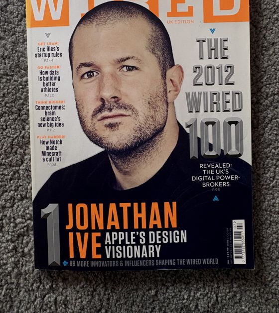
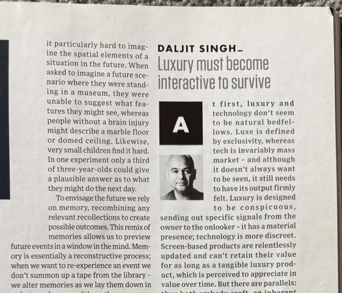
Writing · Wired
Luxury must become interactive
A column for the Wired 100 issue with Jonathan Ive on the cover, arguing that luxury and technology share a craft and that the screen alone cannot hold a luxury product's value. That thinking took me to the V&A as the original guest curator of its luxury exhibition, where my vision for the show was not the one carried forward, and it went on to become Ore, the technology jewellery I co-founded.
Talk to me.
Happy to walk through any of this in person, or send the full CV.